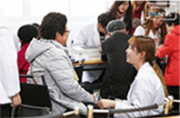

HOME
|
SITEMAP
|
LOGIN
|
NSU
센터소개
봉사활동
커뮤니티
제9회 한국장학재단 수기, UCC 공모...
2018 평창동계올림픽 중계방송(OBS)...
남서울대 학보사 제 20기 수습기자 모...
제16기 홍보대사 & 제5기 홍보기자단...
[대사협] 34기 월드프렌즈 청년봉사단...
[천안흥타령춤축제2017] 대학생 통역...
2017학년도 남서울대학교 글로벌 홍...
2017년 1기 대학생 돌봄봉사단 모집
